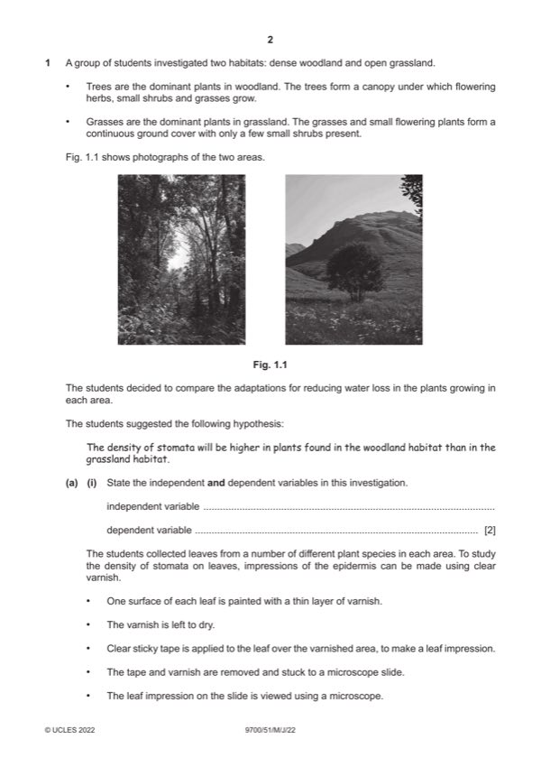

Question 1

Original paper page 2
Part 1(a)(i) — solution
independent variable: 2
(type of) habitat / described ;
dependent variable:
density / number / AW, of stomata ;
Mark points
- Include the ideas shown in the solution above.
Part 1(a)(ii) — solution
Radius / diameter (of field of view / image / circle / Fig 1.2) ; 2
number of stomata ;
Mark points
- Include the ideas shown in the solution above.
Part 1(a)(iii) — solution
2 marks for density range: 2
0.014–0.019 ; ;
if outside this range one mark for:
stomatal number:
Mark points
- Include the ideas shown in the solution above.
Part 1(a)(iv) — solution
any six from: 6
Mark points
- Include the ideas shown in the solution above.
Part 1 — solution
ref. to method of, random / systematic sampling of plants ;
Mark points
- Include the ideas shown in the solution above.
Part 1(b)(i) — solution
73 (%) ; 1
2022 Page 7 of 10
9700/51 Cambridge International AS & A Level – Mark Scheme May/June 2022
Mark points
- Include the ideas shown in the solution above.
Part 1(b)(ii) — solution
support – max 2 marks: 3
Mark points
- Include the ideas shown in the solution above.
Part 1 — solution
stomatal density on upper surface is higher in plants grown in high light intensity ora ;
Mark points
- Include the ideas shown in the solution above.
Part 1 — solution
(some) SIV antibodies will bind to HIV antigens ;
Mark points
- Include the ideas shown in the solution above.
Part 1 — solution
results, may not be due to death from SIV / may be due to disappearance ;
Mark points
- Include the ideas shown in the solution above.